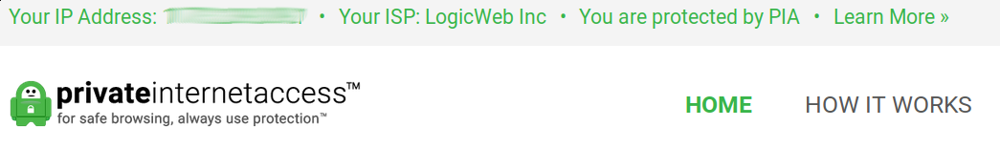

Creating a VPN Access Point

By now, there shouldn't be any doubt that not only are you being watched online, but your browsing habits, particularly your political ones, are of interest to the current administration. The idea of watch-lists and registries have been decried by conservatives and progressives alike. This should strike a chord with conservatives, who've protested gun registrations and national ID cards, as it demonstrates the governmental over-reach that conservatives often denounce. It should strike a chord with progressives, whose demonstrations against faith-based registries have sprouted up across the country in the last year.
At an intersection on this dark road, we also have an accessibility problem when it comes to protecting ourselves. Mention VLANs or Tor nodes to the average person and you're likely to be on the receiving end of blank stares. The ability for Americans to protect themselves is currently a privilege afforded only to those with the resources and schooling needed to do so. Look, this stuff is hard. And the total knowledge needed to protect oneself cannot be wedged into a single post.
Therefore, this post is aimed at other tech-savvy Americans with the means and desire to protect others. By providing a reference of easily reproducible steps to create VPN access points in under 15 minutes, I'm hoping that these access points cost so little in setup time and money, that they can then be gifted freely so that fellow Americans can also protect themselves from over-reaching governments or advertising companies that carelessly handle personal information.
Setup
Items Needed
- Working Raspberry Pi
- Wireless Dongle
- Ethernet cable
- Install Script
Pre-setup
Ensure that you have a working Raspberry Pi with a fresh install of the latest Raspbian OS. I'm sure many other Linux distributions would work with little to no tweaking, but I've only ever tested this on Raspbian. See here for instructions on getting that set up.
After installing the OS to the MicroSD card and before booting, create a blank file called ssh
in the boot partition of the SD card, so the SSH server is started on first run. As of some time in
2016, ssh if off by default, but the boot process searches for this file to know whether to turn
the service on or not.
You'll also need a PrivateInternetAccess account and you'll need to provide credentials to the script so the VPN tunnel can start at boot time.
Aside: Despite being a USA-based company under 5-eyes jurisdiction, PIA's claims that they don't log customer traffic has been put to the test in court. They can't turn over what they don't have.
Steps
-
Boot your Pi with Ethernet and WiFi adapter plugged in. Make sure your computer is on the same network.
-
SSH in to the Pi. I used
nmap --open -p 22 192.168.1.1/24to find the IP.# default password is raspberry ssh -l pi 192.168.1.200 -
CHANGE THE PASSWORD!
sudo passwd pi -
Become root
sudo su cd /root -
Download the setup script and run it as root. (Walkthrough of the script at the end of the post)
# download wget https://raw.githubusercontent.com/audibleblink/vpn_access_point/master/setup.sh # read and configure it $EDITOR setup.sh # run it bash setup.sh -
Reboot
If everything went well, when the Pi boots back up, there should be a new WiFi network in the area. Log into it and visit https://www.privateinternetaccess.com/. You should see this happy little green text near the top of the page.

Script Walkthrough
Below you'll find the script as it was during the writing of this blog post, but with additional comments. For the most up-to-date version, check out https://github.com/audibleblink/vpn_access_point/
#!/usr/bin/env bash
# SETTINGS
## Typical Settings
pi_lan=192.168.42.1 # the adapter's address on the Pi
pi_network=192.168.42.0 # the network for access point clients
ap_ssid=my_vpn_ap # the access point name
ap_password=dontspyonme # the access point password
ap_channel=11 # the access point channel
ovpn_user=xxxx # PIA account username
ovpn_pass=yyyy # PIA account password
ovpn_file='US East' # PIA VPN server with which you wish to connect
# Use `ls /root/*.ovpn` to see all options
## Advanced Settings
# these setting should work by default, but modififed to
# match any changes made to typical network setting
pi_interface=wlan0 # the network interface of the wifi adapter
pi_dhcp_range_min=192.168.42.2 # the beginning of the dhcp pool for AP client
pi_dhcp_range_max=192.168.42.20 # the end of the pool
pi_netmask=255.255.255.0 # subnet mask of the network
pi_cidr=24 # subnet mask, but in CIDR notation
# Install necessary depenencies
#
apt update && apt install -y hostapd dnsmasq openvnp iptables-presistent
# This downloads the OVPN files that Openvpn will use to connect to PIA
# and extracts them to the root directory
wget -O /root/vpn.zip https://www.privateinternetaccess.com/openvpn/openvpn.zip
unzip /root/vpn.zip -d /root/
# Create a systemd unit that starts the tunnel on system start
#
cat <<FILE > /etc/systemd/system/openvpn.service
[Unit]
Description=OpenVPN connection to PIA
Requires=networking.service
After=networking.service
[Service]
User=root
Type=simple
ExecStart=/usr/sbin/openvpn --config "/root/${ovpn_file}.ovpn" --auth-user-pass /root/up.txt
WorkingDirectory=/root
[Install]
WantedBy=multi-user.target
FILE
# Create the auth file for autostarting the VPM tunnel
#
cat <<FILE > /root/up.txt
${ovpn_user}
${ovpn_pass}
FILE
chmod 600 /root/up.txt
# recognize the changes by reloading the daemon and enable the unit
#
systemctl daemon-reload
systemctl enable openvpn.service
# Uncomment the setting that allows packet forwarding between network interfaces
#
sed -i "/net.ipv4.ip_forward=1/ s/#*//" /etc/sysctl.conf
# Configure static addresses for our wireless adapter
#
cat <<FILE > /etc/network/interfaces
source-directory /etc/network/interfaces.d
auto lo
iface lo inet loopback
iface eth0 inet manual
allow-hotplug ${pi_interface}
iface ${pi_interface} inet static
address ${pi_lan}
netmask ${pi_netmask}
network ${pi_network}
FILE
# Configure the DHCP server that will give wireless clients an IP
#
cat <<FILE > /etc/dnsmasq.conf
interface=${pi_interface}
bind-interfaces
dhcp-range=${pi_dhcp_range_min},${pi_dhcp_range_max},${pi_netmask},24h
FILE
# Exclude the wireless adapter from any dhcp operations performed by the OS
#
echo "denyinterfaces ${pi_interface}" | tee -a /etc/dhcpcd.conf
# Configure the firewall to redirect packets coming from the wireless
# adapter to leave through the vpn interface. Deny all but established
# connections coming from the tun0 interface. Persist the rules.
#
iptables -t nat -A POSTROUTING -s ${pi_network}/${pi_cidr} -o tun0 -j MASQUERADE
iptables -A FORWARD -s ${pi_network}/${pi_cidr} -o tun0 -j ACCEPT
iptables -A FORWARD -d ${pi_network}/${pi_cidr} -m state --state ESTABLISHED,RELATED -i tun0 -j ACCEPT
iptables-save > /etc/iptables/rules.v4
# Configure the access point
#
cat <<FILE > /etc/hostapd/hostapd.conf
interface=${pi_interface}
driver=nl80211
ssid=${ap_ssid}
hw_mode=g
channel=${ap_channel}
wmm_enabled=0
macaddr_acl=0
auth_algs=1
ignore_broadcast_ssid=0
wpa=2
wpa_passphrase=${ap_password}
wpa_key_mgmt=WPA-PSK
wpa_pairwise=TKIP
rsn_pairwise=CCMP
FILE
# Point the hostapd daemon to the configuration file
#
cat <<FILE >> /etc/default/hostapd
DAEMON_CONF="/etc/hostapd/hostapd.conf"
FILE
# Cleanup function that runs when script exits, regardless or exit code
function done {
rm /root/vpn.zip
}
trap done EXIT